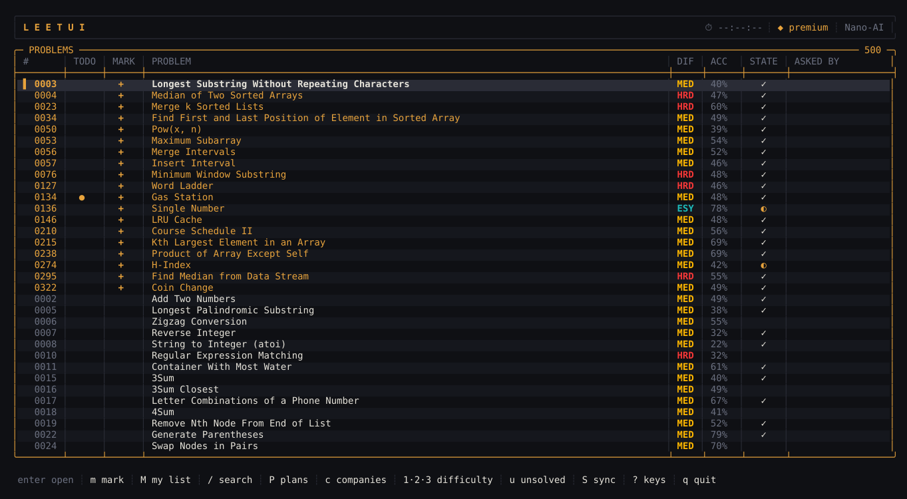
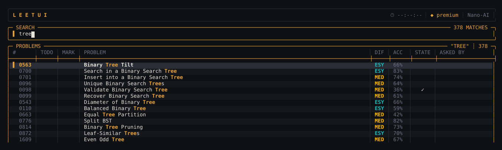
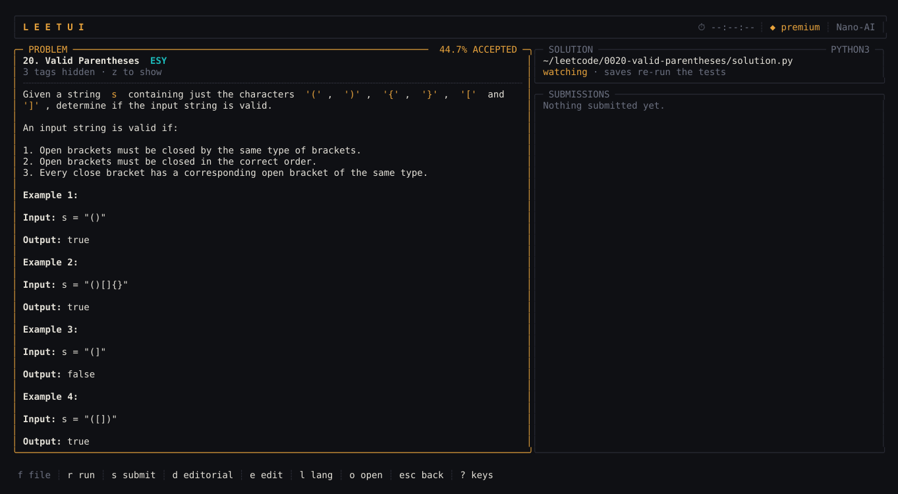
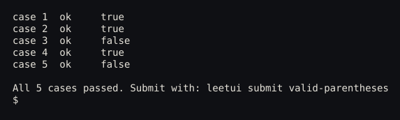
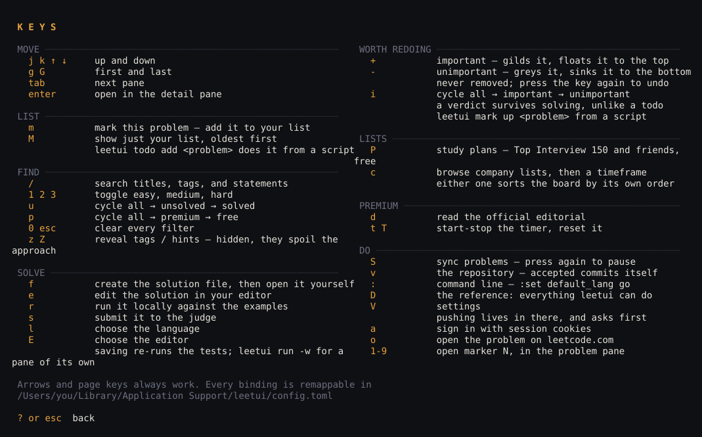
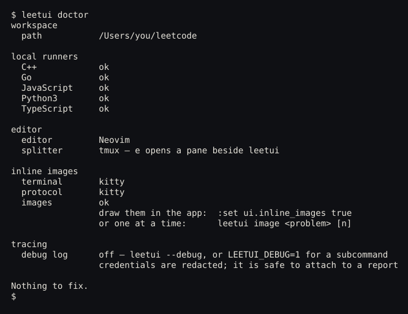

Solve LeetCode without leaving the terminal.
All 4,013 problems live on your own disk, so the board answers while you type.
iInstall
curl -fsSL https://raw.githubusercontent.com/Nano-AI/leetui/main/install.sh | sh
Read it first. That goes for every install script.
brew tap Nano-AI/tap && brew trust nano-ai/tap && brew install leetui
brew trust is Homebrew's gate on third party taps.
go install github.com/Nano-AI/leetui/cmd/leetui@latest
Go 1.24 or newer. The binary lands in ~/go/bin.
macOS, Linux and Windows builds are on Releases. One static file.
Session

Every frame is the program, not a mockup.
Local
- problems
- company lists
- study plans
- network calls to search
/Find
Titles, tags and full statements, searched on the local index — no network call, so it answers while you type.

eSolve
Statement on the left; your file and every past verdict on the right. e opens your editor, r runs the examples without leaving.

sSubmit
There are no spinners in leetui. A pending verdict is a flap held mid flip.

Accepted commits itself. Pushing asks first.
?Keys
Every binding on one screen, behind ?.

Doctor
Session cookies go to the OS keychain, never to disk.
leetui doctor reports what this machine is missing before you sync.
